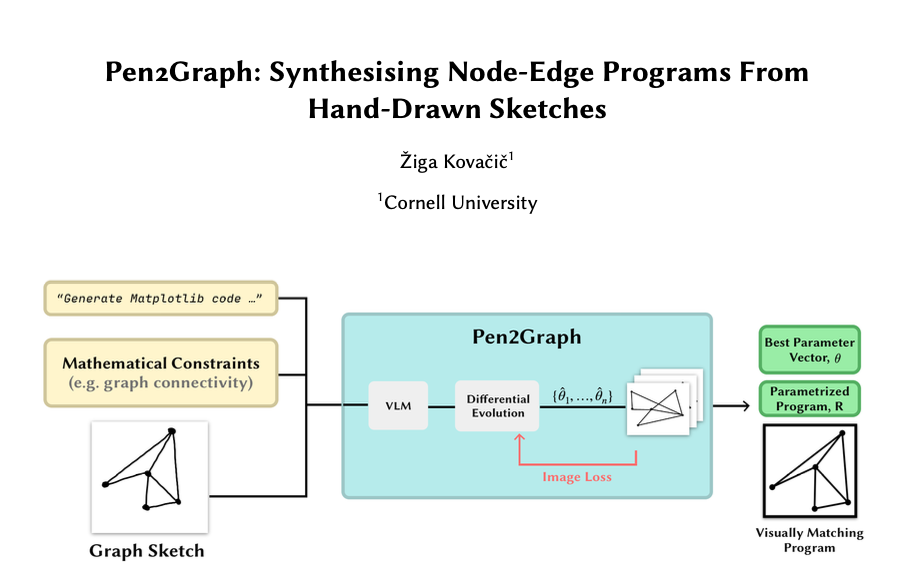

Hi! I'm a Cornell University College Scholar pursuing a B.A. in Mathematics and Computer Science. I'm fortunate to work with Professor Kevin Ellis on code refactoring and code generation for physical simulation, and with Professor Steve Marschner on neural physics simulations.
Research
My interests lie at the intersection of physical simulation, machine learning (code generation), and tools for computer graphics. In the past, I worked on time-lapse generation and modal analysis for resimulation with Abe Davis.

Physics-Based Simulation
Publication
Pocket Time-Lapse
Publication
MPM Yarn Simulation (2025)
Project
Implements Anisotropic Elastoplasticity for Cloth, Knit and Hair Frictional Contact [C. Jiang et. al., 2017].
XPBD Simulator (2025)
Project
Implements PBD solver with ability to simulate cloth, volumetric meshes, and fluids in the same solver.
MLS-MPM and CPIC (2025)
Project
Implementation of the Moving Least Squared Material Point Method, CPIC, various materials, and mesh extraction in 2D and 3D.
Path Tracing in OCaml (2025)
Project
A path tracer featuring distributive ray tracing, reflections, refractions, volumetrics, emissive objects, and a BVH.

Pen-2-Graph (2024)
Project
Automates generation of node-edge graph programs from sketches using vision-language models and differential evolution.
Image Space Modal Basis (2024)
Project
Implements "Image-Space Modal Bases for Plausible Manipulation of Objects in Video", extending it with modal warping. Features a Python pipeline and custom JS rasterizer.
Obstruction Removal - SliceSplatting (2024)
Project
Modifies Gaussian Splatting to remove obstructions blocking the view of objects of interest in 3D scene reconstruction.
CS 4620: Introduction to Computer Graphics (Fall 2024)
Teaching Assistant for undergraduate computer graphics course covering rendering, modeling, and interactive graphics.
CS 2110: Object Oriented Programming and Data Structures (Spring 2023)
Teaching Assistant for introductory programming course covering Java, object-oriented design, and fundamental data structures.